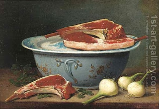

Sotah 29 - Can you ask him?
Earlier we saw a difference in the laws of purity between humans whom you can ask about the situation, and inanimate objects that cannot be questioned. If a doubt about purity arises in a yard (or another private area), then if it is about human, who can be queried, he is declared impure. But if it is about a piece of meat, say, then it is declared pure. We learned this law from the purity of a suspected wife, but there is yet another source for it.
" If sacrificial meat comes into touch with something impure, then it cannot be eaten, but otherwise a ritually clean person may eat it ."
The beginning of the phrase says that impure meat is not eaten. So we understand that doubtfully impure meat can be eaten. But the end talks about pure meat that may be eaten. And we can derive that doubtfully pure meat cannot be eaten. So now we have two contradictory indications, whether one can eat doubtfully pure meat. You can only explain it if you say that the doubt is prohibited when it refers to a human, who can be asked, and allowed if it refers to meat itself, which obviously cannot be asked at all.
Art: A pottery bowl, cuts of meat and onions on a table by French School